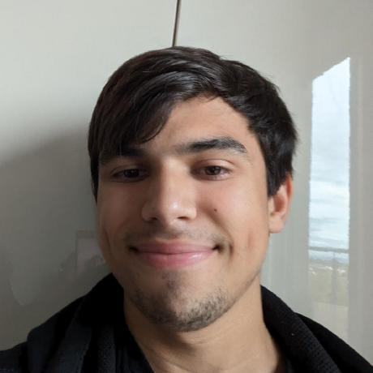
During my time at Tall Team I did various tasks within Smash Karts.
For example, I worked on gameplay systems, menus and account management.
These projects are some of my better projects. There are more on my Github.
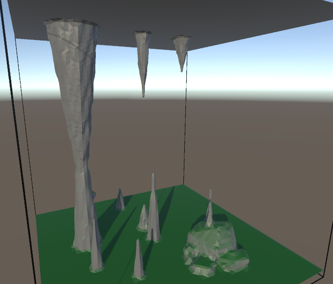
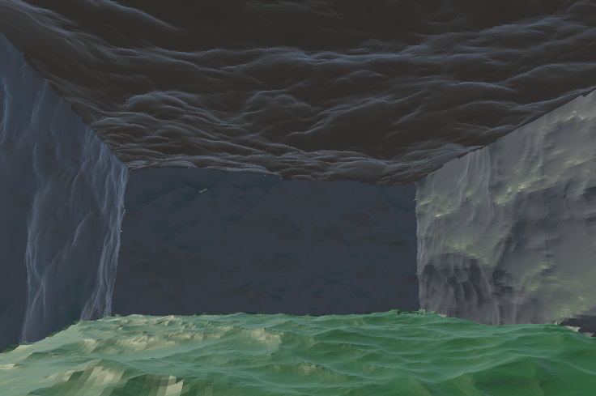
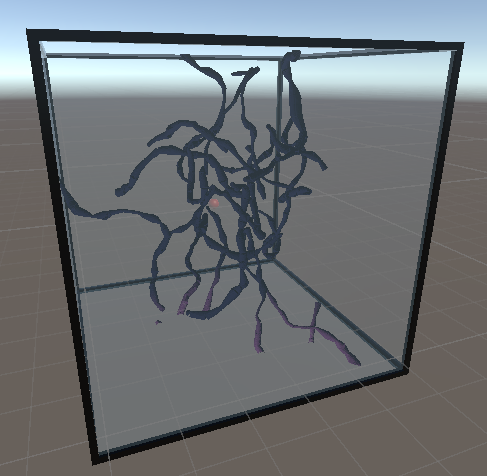
This project started as a Marching Cubes cave generation demo but I started my journey to make it into a full FPS, cave exploration, rogue-like.
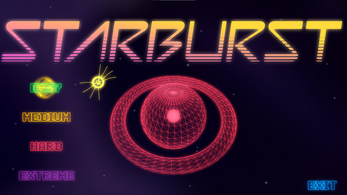
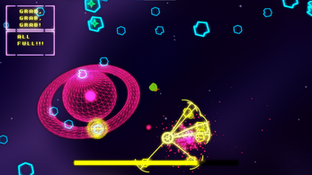
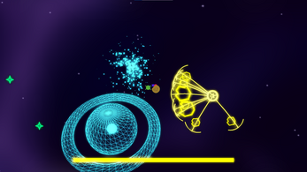
Starburst is an Asteroids like arcade shooter that I made with a friend for Games Fleadh 2025 using Raylib.
The game ended up getting 2 awards which were: Best Game Without An Engine and Best Game Mechanic.
I did all the programming while my friend made the art assets and it took around 3 months to complete.
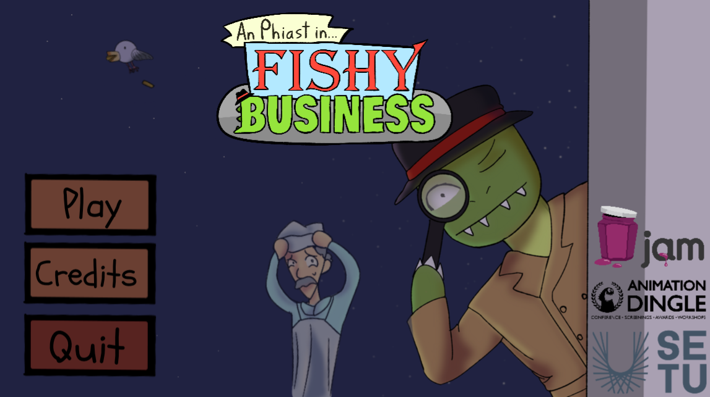
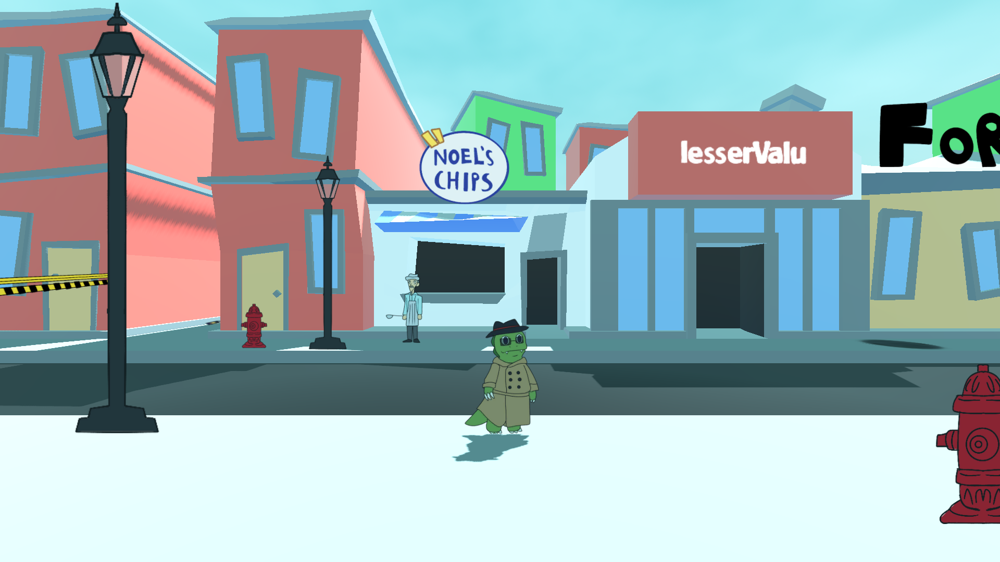
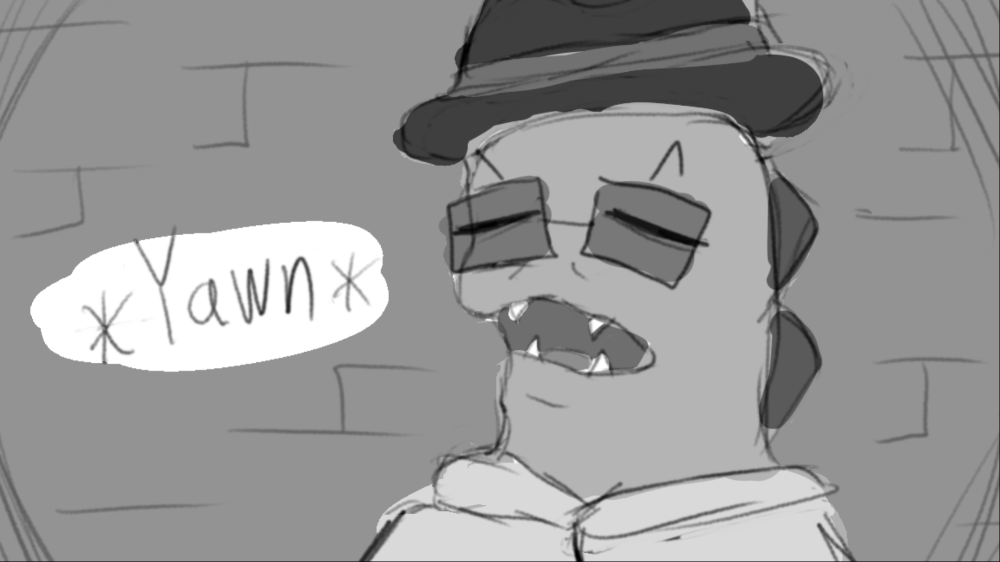
This project was a group project in Godot for Dingle Animation Festival 2026 where we were nominated for Best Game.
For the project, I did 95% of the programming while the others worked on art and sound.
It is a story-driven detective game where you meet different characters and play minigames to gather evidence.
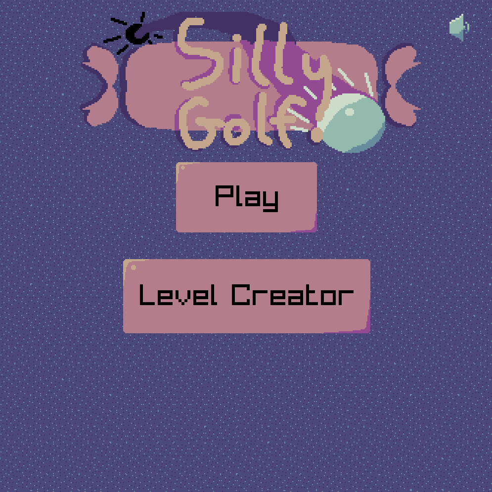
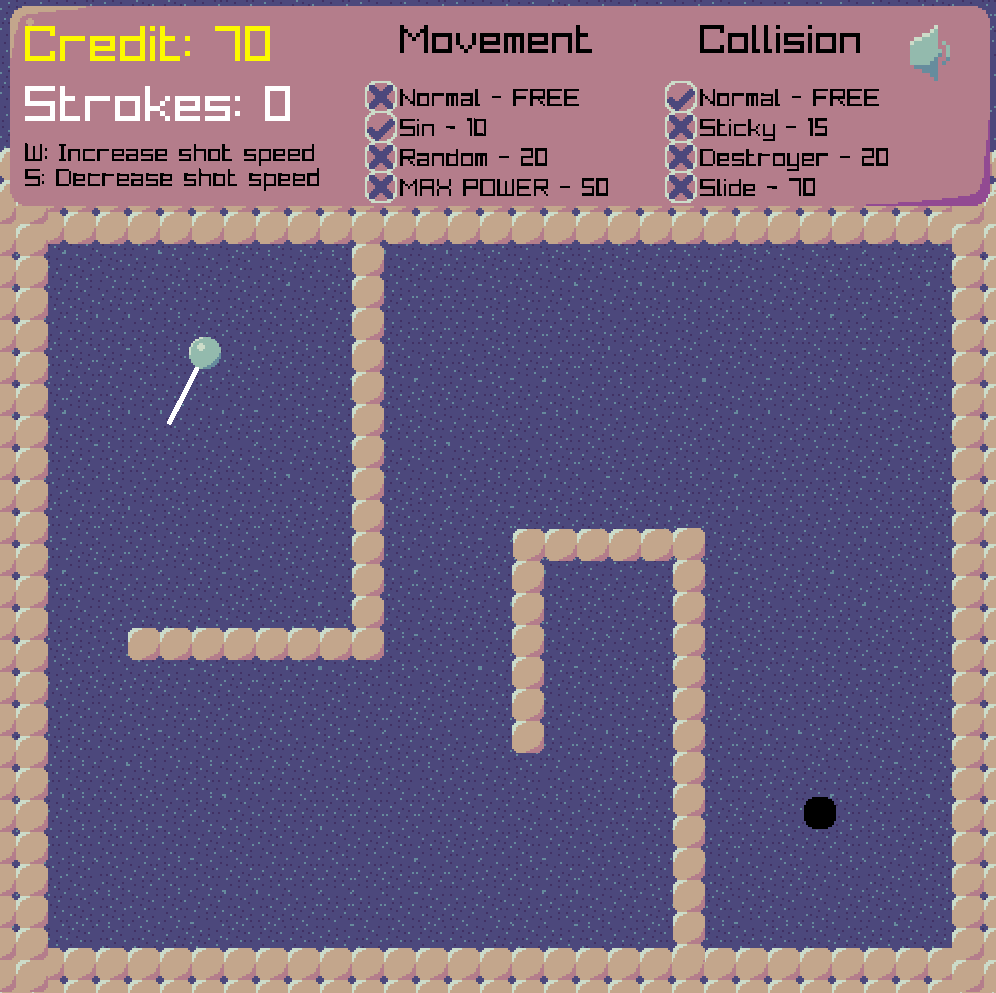
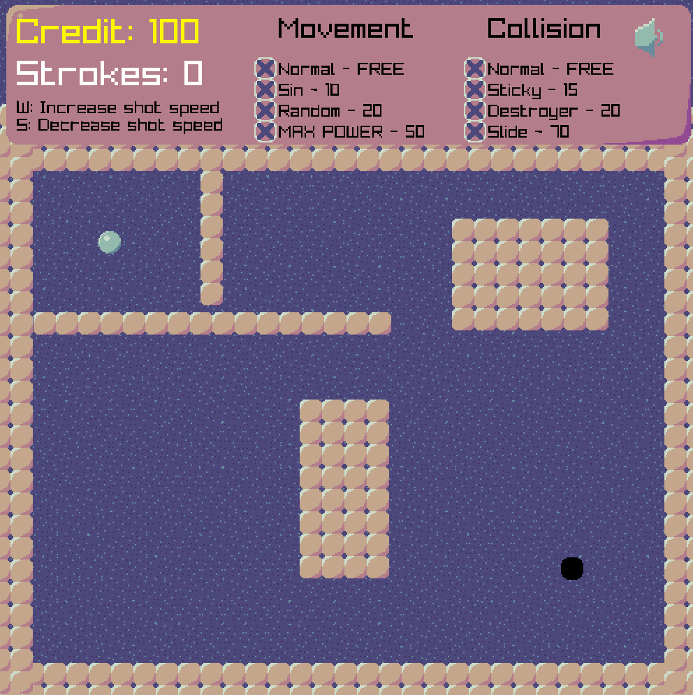
This project was made in Raylib for the Shovel Jam 2025 in around 4 days.
The game is a simple top-down golf game where you can add effects to your ball before shooting.
It also includes a level builder that anyone can use when downloaded that allows you to save levels and send them to others.